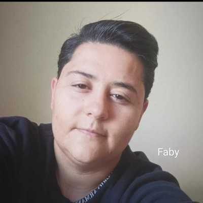

Supervisora Administrativa, Desenvolvedora Web e estudante de Análise e Desenvolvimento de Sistemas. Experiência sólida em contratos públicos, compras estratégicas, logística, construção civil, gestão operacional e automação de processos. Perfil voltado para organização, liderança, resolução de problemas e desenvolvimento de soluções práticas para melhoria contínua.
Entrar em contato
Desenvolvimento de planilhas inteligentes, automatização de controles operacionais e melhoria de processos administrativos, buscando mais eficiência, organização e redução de retrabalho.
Criação de interfaces modernas, sites responsivos e soluções digitais voltadas para automação, organização operacional e melhoria de produtividade.
Vivência prática em obras, manuseio de ferramentas elétricas, montagem, manutenção e solução de problemas operacionais com foco em execução eficiente.
Facilidade em identificar falhas, reestruturar processos, implementar melhorias e aprender rapidamente novos sistemas de gestão e operação.
Construção de carreira sólida dentro da empresa através de crescimento interno baseado em desempenho, organização operacional e capacidade de liderança. Atuação estratégica em contratos públicos de alta responsabilidade, com participação direta em processos administrativos, compras técnicas, controle operacional, gestão de equipes, planejamento de demandas e acompanhamento contratual. Experiência ligada a contratos da Câmara dos Deputados, Hospital das Forças Armadas, ABIN e Ministério Público, atuando diretamente em operações administrativas, controle de fornecedores, negociações, organização documental e suporte à tomada de decisão. Perfil voltado para resolução de problemas, otimização de processos, redução de falhas operacionais e melhoria contínua das rotinas administrativas e contratuais.
Atuação em rotinas administrativas, controle operacional, almoxarifado, recebimento de materiais, controle de estoque, organização logística e suporte às equipes de obra. Participação na ampliação da Faculdade Projeção e no Laboratório de Algodão da Abrapa, auxiliando no acompanhamento operacional das atividades e organização de materiais utilizados na execução dos projetos. Vivência prática em ambiente de construção civil, desenvolvendo conhecimento técnico sobre materiais, equipamentos, ferramentas e funcionamento operacional de obras. Experiência complementar em atividades práticas de canteiro, incluindo apoio em montagem, formas, acabamentos e utilização de ferramentas elétricas como martelete, furadeira, parafusadeira, serra circular e vibrador de concreto.
Participação ativa no período de expansão da empresa, atuando na estruturação operacional do setor responsável pelos grandes geradores de resíduos durante a implementação das novas exigências relacionadas à destinação correta de resíduos. Crescimento interno conquistado através de desempenho operacional, organização e capacidade de liderança, evoluindo de Auxiliar Administrativo até Encarregada de Logística. Responsável pela organização de rotas mais eficientes, alinhamento operacional das equipes, melhoria da comunicação interna e acompanhamento das demandas diárias da operação. Implantação de reuniões estratégicas voltadas para melhoria do relacionamento entre equipes, redução de conflitos operacionais, fortalecimento do ambiente de trabalho e identificação de colaboradores com destaque em desempenho e comprometimento. Atuação focada em eficiência operacional, organização logística, otimização de processos e melhoria contínua da operação.
Atuação voltada para expansão comercial, prospecção estratégica, desenvolvimento de networking e criação de novas parcerias comerciais. Identificação de oportunidades de crescimento através da ampliação da rede de contatos e fortalecimento das conexões comerciais, contribuindo diretamente para melhoria dos resultados da operação. Implementação de ferramentas digitais, automação de processos comerciais e utilização de APIs voltadas para captação em massa de novos clientes, aumentando alcance operacional e geração de oportunidades. Desempenho acima das metas estabelecidas pela empresa, mantendo média superior ao parâmetro de compensação durante o período de atuação. Perfil voltado para estratégia, crescimento operacional, uso de tecnologia aplicada ao comercial e desenvolvimento de soluções para aumento de performance.
Anos de experiência profissional
Promoções internas por desempenho
Grandes contratos públicos
Resultados acima da média comercial
Tecnólogo em Análise e Desenvolvimento de Sistemas — Universidade Paulista (2024 a 2026). Foco em Desenvolvimento Web, automação de processos, soluções administrativas inteligentes e criação de sistemas voltados para melhoria operacional.
Excel, Word, Canva, Redes de Computadores, Sistema Operacional e Mestre de Obras. Facilidade em aprender novos sistemas, plataformas de gestão e ferramentas voltadas para automação e produtividade.